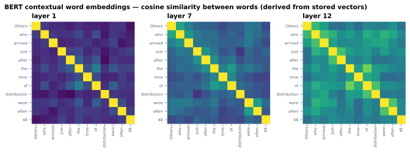

On this page
6.1.15BERT contextual word embeddings
A 768-dimensional vector per word, emitted at every one of BERT's 12 transformer layers.
6.1.15.1What it is
A 768-dimensional vector per word, emitted at every one of BERT's 12
transformer layers. Output shape: (n_words, 12, 768). Each word's vector
encodes its meaning in context — the same surface word ("bank") receives
different vectors in "river bank" vs. "savings bank".
6.1.15.2See it

6.1.15.3In your output
| variable | size | MATLAB class |
|---|---|---|
embeddings | 26 × 12 × 768 | single |
tokens | 1 × 26 | cell |
word_id | 1 × 26 | int64 |
sentence_id | 1 × 26 | int64 |
is_valid | 1 × 26 | uint8 |
6.1.15.4MATLAB
S = load('word/LJ002-0321_bert_word.mat');
whos('-file', 'word/LJ002-0321_bert_word.mat') % variables, sizes, classes
size(S.embeddings) % 26 x 12 x 768 (single) = words x layers x dims
L = 9; % pick a layer
E = squeeze(S.embeddings(S.is_valid == 1, L, :));
En = E ./ vecnorm(E, 2, 2);
imagesc(En * En'); axis square; colorbar % cosine similarity at layer L
6.1.15.5How it's computed
Each layer's vector is the mean of the contextual subword embeddings
that BERT's WordPiece tokenizer produced for that word. For a word w
that tokenizes into subwords s_1, …, s_k at layer ℓ:
h_ℓ(w) = mean(h_ℓ(s_1), …, h_ℓ(s_k))
The hidden state h_ℓ(s_i) is the output of layer ℓ's self-attention +
feed-forward block, which incorporates information from all other tokens
in the same input window via attention.
6.1.15.6Example
import torch
words = ["The", "cat", "sat", "on", "the", "mat"]
enc = tokenizer(words, is_split_into_words=True, return_tensors="pt")
with torch.no_grad():
out = model(**enc)
# out.hidden_states[0] is the embedding layer; [1:] are the 12 transformer layers
layers = torch.stack(out.hidden_states[1:]) # (12, 1, seq_len, 768)
layers = layers.squeeze(1).permute(1, 0, 2) # (seq_len, 12, 768)
# Mean-pool subwords belonging to each word
word_ids = enc.word_ids()
word_vecs = []
for w in range(len(words)):
positions = [i for i, wid in enumerate(word_ids) if wid == w]
word_vecs.append(layers[positions].mean(dim=0))
6.1.15.7In the code
Source: sensi/extractors/bert_embed.py.
What the code does (verified against the source):
- Outer loop is per sentence (sentence IDs from spaCy via the word-level CSV).
- For each sentence, BERT input is built as
[preceding-sentences-context] + [current-sentence-content-words], where the context is grown by prepending complete preceding sentences (oldest dropped first) as long as the total stays within the 510-token effective limit (512 minus[CLS]/[SEP]). Preceding sentences are never split mid-way. - PUNCT tokens are excluded from BERT input entirely (the spaCy
upos == "PUNCT"mask is applied before tokenization). - A single forward pass runs on the resulting window
(
is_split_into_words=True,truncation=Trueas a safety net). - For each target-sentence word, the WordPiece subwords belonging to it
are mean-pooled at each layer to produce a single
(12, 768)vector. Output rows for PUNCT words stay as zero vectors. - All 12 transformer layers are emitted —
hidden_states[1:13], skipping the embedding layer at index 0. - The sentence-level sidecar (
<stim>_bert_sentence.mat) is the mean-pool of the non-PUNCT word embeddings within each sentence, at each layer. - The extractor returns word- and sentence-level validity masks
(
word_valid,sent_valid) alongside the matrices; both are written to the.matasis_valid. For the word level, a row is valid iff it is a non-PUNCT word that was embedded (PUNCT rows, and any word in a skipped window, stay zero + invalid).
Output .mat fields — flat top-level variables (not a nested struct),
so embeddings stays backward-compatible:
| Field | Shape | Meaning |
|---|---|---|
embeddings |
(n_words, 12, 768) float32 |
per-layer vectors, row-aligned to the word CSV |
tokens |
{n_words} cellstr |
surface token per row |
word_id |
(n_words,) int |
the word CSV token_id (global token index) |
sentence_id |
(n_words,) int |
spaCy sentence id |
is_valid |
(n_words,) logical |
False for PUNCT (zero rows) |
Why:
- Left-context, sentence-complete sliding window is the chosen fix for the 512-token cap.
- PUNCT excluded from input — BERT's WordPiece doesn't represent punctuation semantically, and including PUNCT tokens perturbs attention over content words.
- All 12 layers emitted —
hidden_states[1:13]; the choice of layer for downstream EEG prediction is left to the analyst.
Alternatives that were not chosen (for reader context):
| Approach | Why we didn't pick it |
|---|---|
| Hard truncation at 512 tokens | Drops the tail of every long passage. |
| Fixed-stride sliding window (e.g. 256 stride / 512 window) | Heavy overlap, ~2× compute, harder to attribute a vector to a specific word position. |
| Sentence-by-sentence with no prior context | Loses cross-sentence semantic continuity, which is a large part of why contextual embeddings predict EEG/MEG well in the first place (Toneva 2019). |
| Pool layers in-extractor (e.g. mean of layers 9–12) | Smaller file but discards per-layer signal the downstream analyst may want. |
| Bidirectional (left + right) context | Each word's vector would depend on words the listener has not heard yet, so it would mix information from after the word into a predictor of the brain's response at that word. |
6.1.15.8Library
from transformers import BertTokenizerFast, BertModel
tokenizer = BertTokenizerFast.from_pretrained("bert-base-uncased")
model = BertModel.from_pretrained("bert-base-uncased", output_hidden_states=True)
6.1.15.9EEG rationale
Contextual embeddings predict word-level neural responses to naturalistic language with high explained variance. Comparative benchmarks of dozens of language models against fMRI and ECoG show transformer models outperforming static baselines (Schrimpf 2021); per-layer analyses identify different best-layers per ROI for MEG/EEG-style word-by-word data (Toneva 2019); and intracranial ECoG recordings of audiobook listening show that the human brain and autoregressive transformer models share contextual-prediction computations during natural language processing (Goldstein 2022). The brain processes meaning relative to the unfolding sentence, not relative to a corpus-averaged sense, so a vector that encodes the in-context meaning of "bank" is a better regressor for the N400 than a single static vector.
The 12-layer stack is shipped intact rather than pre-pooled because layer choice matters and is task-dependent. BERT's layers encode a rough linguistic hierarchy — surface form and POS in early layers, syntactic structure in middle layers, semantic and discourse-level information in late layers (Tenney 2019, Rogers 2020) — and the optimal layer for predicting EEG signal is itself an empirical question (Toneva 2019 sweep across layers and report different best-layer per ROI). Pre-pooling would discard that signal.
6.1.15.10Papers
Model:
- Devlin 2019 Devlin, Chang, Lee, Toutanova. BERT: Pre-training of Deep Bidirectional Transformers for Language Understanding. NAACL 2019. arXiv:1810.04805
BERTology — what the layers encode:
- Tenney 2019 Tenney, Das, Pavlick. BERT Rediscovers the Classical NLP Pipeline. ACL 2019. arXiv:1905.05950
- Rogers 2020 Rogers, Kovaleva, Rumshisky. A Primer in BERTology: What We Know About How BERT Works. TACL 2020. arXiv:2002.12327
Contextual embeddings ↔ brain:
- Toneva 2019 Toneva & Wehbe. Interpreting and improving natural-language processing (in machines) with natural language-processing (in the brain). NeurIPS 2019. arXiv:1905.11833 — per-layer fMRI/MEG alignment; demonstrates that the best layer differs by ROI and that contextual depth improves brain prediction.
- Schrimpf 2021 Schrimpf, Blank, Tuckute, Kauf, Hosseini, Kanwisher, Tenenbaum, Fedorenko. The neural architecture of language: Integrative modeling converges on predictive processing. PNAS 2021. doi:10.1073/pnas.2105646118
- Goldstein 2022 Goldstein et al. Shared computational principles for language processing in humans and deep language models. Nature Neuroscience 25(3), 369–380. doi:10.1038/s41593-022-01026-4 — ECoG (9 participants, 30-min podcast) demonstrating that brain responses and autoregressive transformer models share next-word prediction, prediction-error encoding, and contextual-embedding-based representation of words.